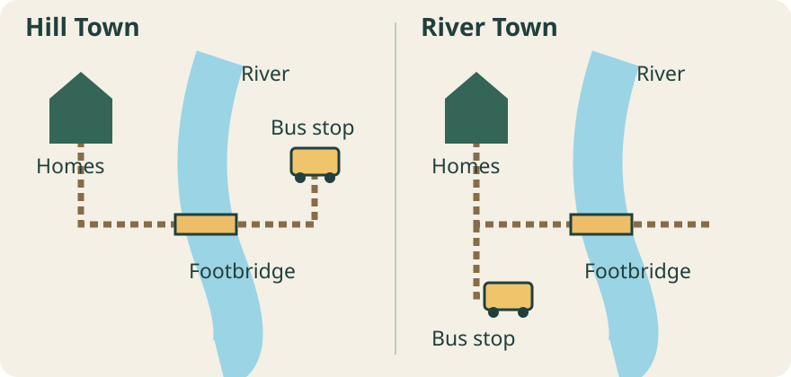

Teaching source: invented towns, map, survey and headlines. Practice evidence, not facts about real countries.
1 · Notice a choice
Same river. Different routes.

Source A · Invented route map · Not to scale. Lines show walking routes, not distances.
Point to one detail. Tell a partner: what might make reaching a bus easier or harder?
Say “I notice…” before “I think…”
Show one possible model
Notice: Hill Town’s route crosses a footbridge. Inference: reaching its stop might be harder for some people. We do not know distances, bridge access or bus frequency.
2 · Read evidence carefully
What can these numbers tell us?
Source B · Invented survey, same day and same question: “Can you reach a bus stop easily?” Twenty residents answered in each town.
Hill Town
8 of 20
River Town
15 of 20
Filled dot = answered yes. Open dot = answered no. Each dot represents one respondent.
Say one supported comparison. Name one thing we still cannot tell.
Show one possible model
More of the people surveyed in River Town said they could reach a stop easily: 15 compared with 8. We cannot say the bridge caused this, or that these 20 people represent everyone.
3 · Question the message
One proposal. Two headlines.
Source C · Invented proposal: Hill Town’s council is considering a new bus stop near the homes. Cost, demand and effects on the current route have not yet been checked.
“New stop could bring buses closer to homes”
“New stop could add costs to town’s bus route”
What does each headline make you notice? Whose evidence would you ask for before deciding?
Show one possible model
The first emphasizes access; the second emphasizes cost. Both say “could,” not “will.” Ask residents facing barriers and the transport service about demand, access, cost and journey times. Neither headline proves the proposal will work.
4 · Make your own inquiry
Take the question into two real places.
On your starter, sketch or write a question about a choice people face. Name one source you would need. Two country choices can come next.
How do communities in ___ and ___ respond to ___, and who is affected?
Power & decisions · Migration · Resources & trade · Cooperation & conflict · Rights & fairness
Show one possible question
How do two growing cities make public transport easier to use, and what trade-offs do they face? Start with each city’s transport map and an account from people who use the service. The fictional towns are practice, not country evidence.
Leave with: a question, an evidence-based observation and a next source to find. You may talk, sketch or write. Your question can change.
Teacher cue · Use now, then choose a lens
Give pairs the starter or plain paper. Allow about 3 minutes per scene. Read the source aloud, pause for student thinking, then optionally reveal the model. Multiple supported interpretations are welcome. Listen for observation versus inference, comparison limited to respondents, a missing perspective and a researchable question. No devices or personal disclosure are needed.
Next, select the relevant booklet pages, not the whole packet: governance 4; migration 5; trade 6; resources 7; cooperation 8; fairness 3. Evidence and media travel through every lens (pages 9–12). National Child Day is an optional connection, not the frame or a deadline.
Follow your curiosity
Where could you begin?
Try one starting point, or bring your own. You do not need to complete them all.
Government · Participation · Perspectives
Who decides, and whose voices count?
Look at how a decision is made, who can influence it, and who lives with the result.
One possible question
How do two communities decide how to use a shared public space?
Across every starting point: Who made this source? What does it show or leave out? How do media choices affect what we notice?
Our inquiry journey
Six moves. Return whenever you need.
No race and no new deadline. Your group can move back when evidence changes your thinking.
1
Wonder & imagine
Each person suggests one question or possibility. Choose a shared issue and two countries. Sketch an early solution even before you know whether it will work.
Keep: “We wonder…” and “Our first idea is…” Label guesses as guesses.
2
Find & understand
Use one teacher-checked source for each country. Record the publisher, date, link/page and one useful detail. Ask for help with unfamiliar words.
Keep: two source trails and one question the sources do not answer.
3
Compare fairly
Are the sources about similar dates, groups and measures? Look for a similarity, a difference and something you cannot yet compare. Notice differences within each country.
Keep: “Both…”, “In these examples…” and “We still cannot tell…”
4
Listen & test
Who benefits from your idea? Who might face a cost or barrier? Find an actual perspective, rather than inventing what a person or community would say.
Keep: a benefit, a trade-off and one missing voice or piece of evidence.
5
Improve & explain
Revise, narrow or defend your idea. Explain how it could work in one particular place and who would need to take part. It is fine to conclude that you need more evidence.
Keep: a recommendation supported by your sources, with an honest limit.
6
Share & reflect
Choose an explanation your audience can follow: annotated display, short talk, model, illustrated report or another teacher-approved format. Credit sources.
Each person: explain one contribution and one idea you kept, changed or now question, and why.
Working together without doing everything at once
Rotate roles: question guide, source finder, perspective checker and idea builder. Combine roles in smaller groups. Everyone explores both countries; do not split the project into two unrelated country reports.
At the end of a session: record one discovery, one question and one next step. You do not need a polished reflection or portfolio upload every time.
Choose your way in: read together, listen to a short excerpt, draw and label, dictate to a partner, or use a bilingual vocabulary list. An oral explanation can show reasoning. Ask your teacher which evidence to keep.
Use the tools we already have
Inquiry Fieldnotes helps you compare evidence and revise an idea. It does not autosave: print, save PDF or copy your notes before leaving.
SchoolAI setup prompt is for the teacher. There is no live student Space linked here yet.
If we use SchoolAI
Use only your teacher-approved link. Ask it to help you understand a source, explore a possibility or test an idea. Never enter names, family information or private experiences. Check its claims in real sources; AI output is not evidence.
Try: “Our idea is ___. Ask us one question that could help us improve it. Don’t write the project for us.”
Close AI and explain your own thinking. Keep the useful idea, not a full transcript.
Without AI or laptops
Use printed teacher-selected excerpts and paper Fieldnotes. A partner asks: “What supports that? Who might this miss? What would you check next?” The same thinking matters with or without technology.
Teacher planning · Open only what helps
A flexible unit, not a fixed march
Global Issues & Governance
Rights and fairness are one lens alongside governance, migration, resources, trade, cooperation and conflict. Use the selected issue to make a few curriculum connections explicit; this inquiry does not cover every Grade 6 standard by itself.
Ask who makes decisions, how geography, history and economic interests shape choices, and what consequences follow. Work with specific, authentic Indigenous sources. Across all starting points, examine evidence, perspectives and how media choices affect what we notice.
This companion extends the existing November–January country inquiry. It does not replace the booklet, add a second project or claim that planned teaching has happened. Use repeated short conferences to decide the next useful move. January sharing remains proposed, not a fixed deadline.
Launch choices: viewing, reading or no-screen
2040 (2019): reuse a section that engaged the class previously. Treat proposed futures as ideas to investigate, not confirmed outcomes. Have students ask what changed since the film.
Future Council: newer film from Damon Gameau, about young people investigating environmental solutions. Canadian distributor lists Grades 6–8 and up. Preview for suitability and mild language; check district access and classroom rights before screening. No licence or screening is arranged.
Regenerating Australia (2022, 17 minutes): fictional future-news framing, not a factual report of events that already happened. Canadian school access is unverified.
No-screen launch: use the existing rights-and-access source cards, or bring one teacher-reviewed news photograph and caption. Students notice, wonder and propose an inquiry question; they need not disclose personal experience.
Choose one launch. Do not add all of them as required lessons. No copyrighted film or transcript is copied here.
Source-search menu and preview routine
These are starting points, not a pre-approved student reading list. Preview pages for reading load, advertising, distressing images and current accessibility. Select short excerpts or read aloud. External pages can change.
Global E-waste Monitor 2024 is a teacher data source. Its principal totals describe 2022, not the current year. Choose a small chart and explain its measures.
Onondaga Nation: Clan Mothers provides a Nation's own public explanation of governance. Do not treat one Nation as representing all Indigenous peoples or assume public access permits copying cultural designs.
Three possible starting pairs
Use these to compare particular approaches, not to rank whole countries. They are adult-facing sources: select short passages, read aloud, explain vocabulary or offer an accessible paraphrase alongside the original.
Caring for places:Haida Gwaii Watchmen and Whanganui Iwi: Tupua Te Kawa. What responsibilities and relationships does each community describe? Their histories and governance are distinct; neither speaks for all Indigenous peoples.
Repair and reuse:EPRA BC reuse and Repair Network Aotearoa. Who helps keep devices in use, and what barriers remain? Notice the purposes of an industry-led organization and a community repair network. Do not conclude that one country only recycles and the other only repairs.
These pairs begin a search. They are not national statistics or enough evidence by themselves to establish which policy works best.
For each country, seek an original government or community source plus independent reporting where useful. Two pages repeating the same report are not independent confirmation. A testimony represents that person's experience, not everyone. Students can choose a different topic or source.
Model a fair comparison before research
Invented practice data, not real-country evidence: North Town's 2025 survey reports 12 of 20 respondents walk to school. River Town's 2023 count records 18 of 30 arrivals walking at one school.
Both fractions are 60%, but these sources use different methods, dates and groups. We cannot conclude that 60% of all children in either country walk, or that one transport policy caused the result.
Next check: find comparable data and information about distance, accessibility and safety. A reasonable proposal might be a small route-safety investigation, not a claim that every child should walk.
Ask students what can be said, what cannot, and which additional evidence would matter.
Check-ins and assessment without extra posting
Checkpoint
Listen or look for
Useful next move
Question conference
A shared, investigable question and an individual contribution
Narrow place, people or issue; preserve student choice
Evidence conference
A traceable detail from each country, an accurate comparison and a limit
Read a shorter excerpt together or find a better-matched source
Idea conference
A reasoned proposal, a trade-off and a response to another perspective
Ask what might challenge the idea or make it workable
Sharing/reflection
Each learner explains their own reasoning, contribution and next question
Select existing work for the portfolio when requested; no automatic new post
Assess demonstrated reasoning and communication, not political agreement, family disclosure, presentation polish or AI fluency. Group quality alone does not establish each learner's proficiency. Missing work is missing evidence, not proof of missing understanding; use a brief conversation or supported demonstration.
Curriculum connections: Social Studies inquiry, evidence, perspectives, ethical judgments and global issues; ADST digital literacy when students actually evaluate information and use technology responsibly. Select only the tags supported by the task and evidence. The teacher makes proficiency decisions. See the BC Social Studies 6 and ADST 6 standards. Design competencies require actual prototyping, testing and revising; media-making tags require corresponding work.
Feedback Workbench offers fictional comment examples and teacher review checks; never enter private learner records into this public Hub.
Accessibility, extensions and boundaries
Offer one source at a time, read-aloud, key vocabulary with visuals, home-language discussion and oral/sketched responses. Keep the same question and reasoning goal while adjusting the route. Follow individual plans privately; do not put learner names or support records into this public page.
For greater depth, ask students to compare two plausible solutions, examine conflicting sources, or explain conditions under which their proposal would fail. More pages or statistics alone are not deeper understanding.
No fundraising, outside contact, public posting or personal-data entry is required. Obtain teacher approval before any external action. Keep classroom inquiry open to supported disagreement rather than directing students to a preferred political conclusion.